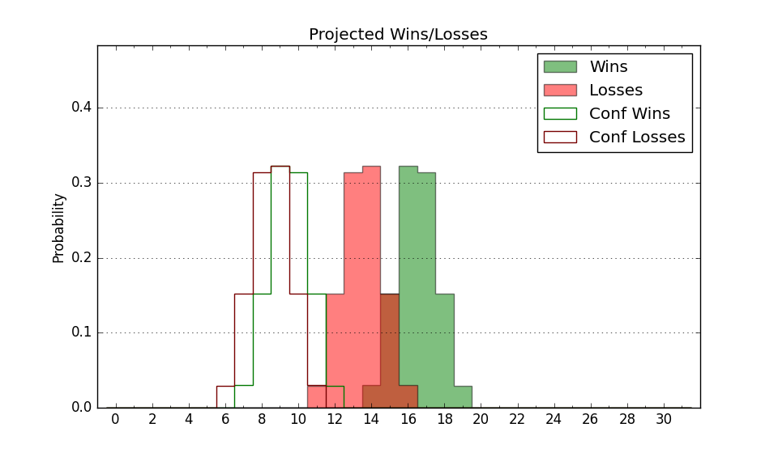

| Home | Game Probabilities | Conferences | Preseason Predictions | Odds Charts | NCAA Tournament |
| City: | Conway, South Carolina | |
| Conference: | Sun Belt (5th)
| |
| Record: | 7-6 (Conf) 14-11 (Overall) | |
| Ratings: | Comp.: -6.6 (230th) Net: -6.5 (230th) Off: 101.9 (283rd) Def: 108.4 (162nd) SoR: 0.0 (102nd) |
| Remaining | ||||||
|---|---|---|---|---|---|---|
| Date | Opponent | Win Prob | Pred. | |||
| 2/12 | @ Louisiana Lafayette (319) | 59.0% | W 66-63 | |||
| 2/18 | James Madison (229) | 64.7% | W 74-70 | |||
| 2/21 | Marshall (152) | 46.7% | L 74-75 | |||
| 2/24 | @ Georgia St. (272) | 44.3% | L 69-70 | |||
| 2/27 | @ James Madison (229) | 35.0% | L 70-74 | |||
| Previous | Game Score | |||||
| Date | Opponent | Win Prob | Result | Off | Def | Net |
| 11/3 | @Western Michigan (297) | 51.4% | L 71-76 | -14.7 | 4.3 | -10.4 |
| 11/11 | Winthrop (131) | 39.3% | W 72-66 | -4.7 | 19.9 | 15.2 |
| 11/14 | @Jacksonville St. (198) | 27.2% | L 67-74 | 3.8 | -4.3 | -0.5 |
| 11/21 | @Western Illinois (361) | 83.2% | W 84-64 | 1.6 | 6.2 | 7.8 |
| 11/22 | (N) North Dakota (276) | 60.3% | W 75-58 | -4.8 | 27.5 | 22.7 |
| 11/23 | @Illinois St. (81) | 8.6% | L 42-94 | -32.7 | -11.1 | -43.8 |
| 11/30 | Alabama A&M (313) | 82.2% | W 67-60 | -11.5 | 8.8 | -2.8 |
| 12/3 | @USC Upstate (274) | 44.7% | L 78-85 | -3.7 | -4.2 | -7.8 |
| 12/6 | @Winthrop (131) | 16.0% | W 88-84 | 27.1 | -7.2 | 19.9 |
| 12/13 | @Grand Canyon (78) | 8.1% | L 61-82 | 7.0 | -5.3 | 1.7 |
| 12/18 | @Appalachian St. (179) | 24.1% | L 49-67 | -18.8 | 3.5 | -15.3 |
| 12/20 | @Old Dominion (262) | 42.1% | W 76-74 | 2.2 | 3.5 | 5.7 |
| 12/22 | @Saint Joseph's (166) | 22.4% | W 68-62 | 2.7 | 21.8 | 24.5 |
| 1/1 | Georgia Southern (261) | 71.0% | L 81-82 | -3.8 | -4.9 | -8.7 |
| 1/3 | Georgia St. (272) | 73.0% | L 71-89 | 3.5 | -42.2 | -38.7 |
| 1/8 | Old Dominion (262) | 71.3% | L 66-70 | -13.0 | -3.8 | -16.8 |
| 1/10 | Appalachian St. (179) | 51.9% | W 67-62 | 16.2 | -7.0 | 9.2 |
| 1/14 | @Marshall (152) | 20.4% | W 85-83 | 24.3 | -6.6 | 17.7 |
| 1/17 | @Georgia Southern (261) | 41.9% | W 79-75 | 1.4 | 5.4 | 6.8 |
| 1/22 | Texas St. (260) | 70.8% | W 72-70 | -0.4 | -4.8 | -5.3 |
| 1/24 | Southern Miss (236) | 65.9% | W 85-67 | 19.2 | -1.2 | 18.0 |
| 1/29 | @South Alabama (189) | 26.0% | L 48-53 | -19.2 | 17.6 | -1.6 |
| 2/1 | @Louisiana Monroe (350) | 74.8% | W 83-79 | 16.1 | -16.3 | -0.1 |
| 2/4 | Arkansas St. (148) | 44.7% | L 66-70 | -9.3 | 5.4 | -3.9 |
| 2/7 | Massachusetts (214) | 59.3% | W 94-91 | 6.2 | -6.2 | -0.1 |
| Stats & Trends | |||||
|---|---|---|---|---|---|
| Current | Day | Week | Month | Season | |
| Composite | -6.6 | -0.0 | -0.3 | +3.6 | +6.9 |
| Comp Rank | 230 | -- | -- | +30 | +68 |
| Net Efficiency | -6.5 | -0.0 | -0.4 | +3.3 | -- |
| Net Rank | 230 | -1 | -2 | +23 | -- |
| Off Efficiency | 101.9 | -0.0 | -0.3 | +4.5 | -- |
| Off Rank | 283 | +1 | -2 | +39 | -- |
| Def Efficiency | 108.4 | -0.0 | -0.2 | -1.2 | -- |
| Def Rank | 162 | +1 | -10 | -11 | -- |
| SoS Rank | 284 | -1 | -6 | +32 | -- |
| Exp. Wins | 16.5 | -0.0 | -0.1 | +4.0 | +4.8 |
| Exp. Conf Wins | 9.5 | -0.0 | -0.5 | +3.0 | +2.2 |
| Conf Champ Prob | 0.1 | -0.0 | -1.3 | +0.1 | -1.6 |

| Advanced Stats | ||
|---|---|---|
| Stat | Value | Rank |
| Off Eff FG % | 0.473 | 309 |
| Off Ast Ratio | 0.112 | 356 |
| Off ORB% | 0.258 | 308 |
| Off TO Rate | 0.137 | 108 |
| Off FT Ratio | 0.292 | 320 |
| Def Eff FG % | 0.490 | 96 |
| Def Ast Ratio | 0.123 | 33 |
| Def ORB% | 0.291 | 123 |
| Def TO Rate | 0.109 | 356 |
| Def FT Ratio | 0.347 | 181 |